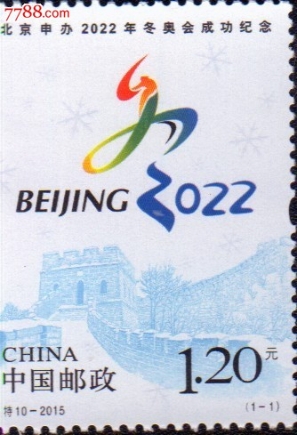

Commemorative
Stamp
On July 31, 2015, China issued a set of stamps commemorating the success of Beijing's
bid to host the 2022 Winter Olympic Games
The logo of Beijing's bid to host the 2022 Winter Olympic Games, with the Chinese calligraphy "winter" as the creative subject, appeared at the first plenary meeting of the Beijing Winter Olympic bid committee held on the 1st
Interpretation of meaning: according to the relevant persons of Beijing Winter Olympic bid committee, the logo of Beijing's bid for the Winter Olympic Games takes the Chinese calligraphy "winter" as the main body, skillfully combines the abstract slide, ice and snow sports form with calligraphy, integrates people with calligraphy, and integrates heaven and man; The two points below the word "winter" merge into 2022, which is vivid and natural. Below the logo is the five rings logo of the International Olympic Committee. According to reports, the logo of Beijing's bid for the Winter Olympic Games not only shows the vitality and passion of winter sports, but also conveys the unique charm of Chinese culture. The logo uses the colors of the five Olympic rings to highlight dynamic, fashionable and modern, and integrates Chinese culture, sports and the Olympic spirit
On October 5, 2019, the first batch of licensed commodities of Beijing Winter Olympic and Paralympic mascots were sold in many licensed retail stores such as Wangfujing Gongmei building and Beijing department store. The new mascot licensed commodities include dozens of commodities in stationery, clothing, badges, key chains, handicrafts, precious metals and other categories.
©2022 Beijing Winter Olympic Games